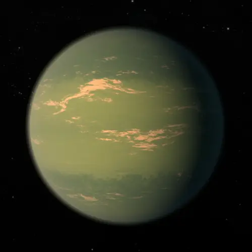

TRAPPIST-1 g — Exoplaneta

Introdução e História
TRAPPIST-1 g é um exoplaneta rochoso que faz parte do sistema TRAPPIST-1, um conjunto de pelo menos sete planetas do tamanho da Terra orbitando uma estrela anã ultrafria a aproximadamente 40 anos-luz da Terra, na constelação de Aquário.
Ele foi descoberto em 2017 usando a técnica de trânsito — que detecta planetas ao observar diminuições periódicas no brilho da estrela quando o planeta passa à sua frente.
Características Físicas: Massa, Raio e Órbita
TRAPPIST-1 g tem massa estimada em cerca de 1,32 vezes a da Terra e um raio de aproximadamente 1,13 vezes o terrestre, indicando que é um planeta rochoso com densidade semelhante à da Terra.
Ele orbita sua estrela a cada ~12,35 dias terrestres, numa distância orbital muito menor do que a da Terra ao Sol, característica comum em sistemas com estrelas pequenas e frias.
A temperatura de equilíbrio estimada gira em torno de -75 °C, o que sugere condições muito frias na ausência de uma atmosfera quente significativa.
Potencial de Habitabilidade
- Zona Habitável: TRAPPIST-1 g está no limite externo da zona habitável da sua estrela, onde a energia estelar pode ser suficiente, em teoria, para permitir água líquida se houver uma atmosfera adequada.
- Clima Frio: A temperatura de equilíbrio sugerida é bastante baixa, o que exigiria uma atmosfera densa com efeito estufa para aquecer a superfície.
- Atmosfera Desconhecida: Ainda não há medições confirmadas de uma atmosfera, então a habitabilidade permanece incerta.
Por estar na zona habitável e ter características físicas comparáveis à Terra, TRAPPIST-1 g é objeto de grande interesse científico em estudos de exoplanetas potencialmente habitáveis.
Curiosidades
TRAPPIST-1 g é um dos planetas maiores do sistema TRAPPIST-1 e recebe apenas cerca de 25% da energia que a Terra recebe do Sol, ajudando a explicar sua temperatura de equilíbrio baixa.
Todos os planetas do sistema TRAPPIST-1 provavelmente estão em rotação síncrona, com um lado sempre voltado para a estrela e outro permanentemente no escuro.
O sistema TRAPPIST-1 é um dos mais promissores alvos para futuras observações de atmosferas exoplanetárias, especialmente com telescópios avançados como o James Webb.
Origem do Nome
O nome “TRAPPIST-1 g” segue a nomenclatura científica padrão: o nome da estrela hospedeira (TRAPPIST-1) seguido de uma letra que identifica a ordem de descoberta e posição orbital (“g” para o sexto planeta no sistema).
Referências
- NASA. TRAPPIST-1 g — Exoplanet Exploration. Disponível em: https://science.nasa.gov/exoplanet-catalog/trappist-1-g/ . Acesso em: 26 dez. 2025.
- NASA Eyes on Exoplanets. TRAPPIST-1 g. Disponível em: https://eyes.nasa.gov/apps/exo/#/planet/TRAPPIST-1_g . Acesso em: 26 dez. 2025.